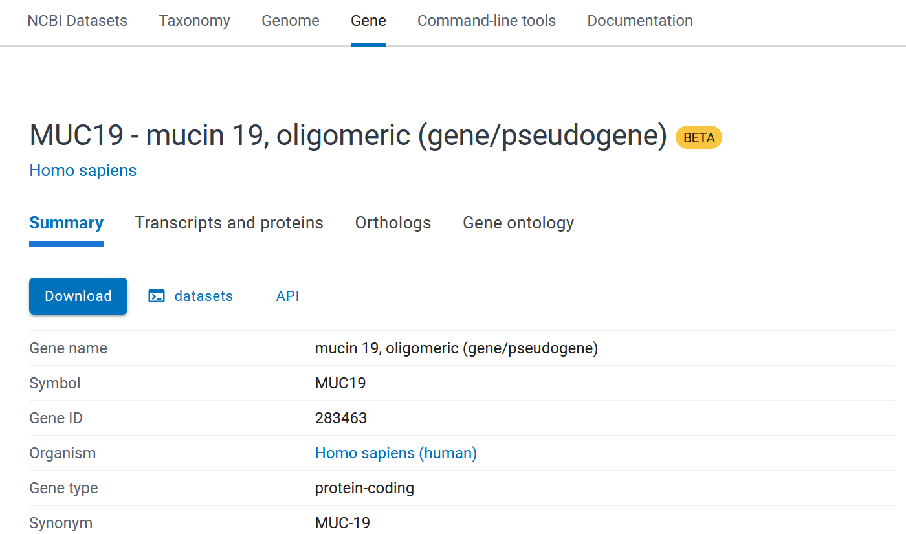
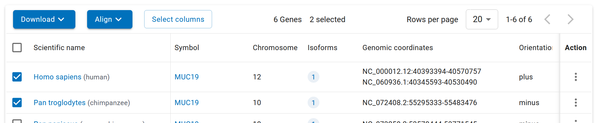

require("vcfR")
require("readr")
samples = read_table("labs/data/muc_samples.txt")
vcf = read.vcfR("labs/data/muc19_samples.vcf.gz")
GT = extract.gt(vcf,element="GT",as.numeric=TRUE)Lab 2
Lab 3: Genetic divergence estimates
Today we’ll keep working with genetic data in R. The goal is to get those who did not import data last time to import genomic data, think about how it is structured, and build a few more functions that are useful to take a glance at your own data. As we go along, I will also point out packages/software that could have done what we are doing for us more easily, but which you decide to use is up to you. My goal is to make sure you understand how these methods work, how genetic data is structured, and what you’ll need for different analyses.
Part 1: Calculating \(F_{ST}\)
In this first part, we’ll continue to work on calculating heterozygosity, and calculate \(F_{ST}\) for a VCF split between two populations.
Importing VCFs:
Today we’ll work with a different vcf than last time. In the data folder you should be able to find muc19.vcf.gz. This is a subsample of the 1000 genomes project data centered around the MUC19 gene. This dataset includes three different populations (MXL,CEU,CHB) which should capture various degrees of divergence. The goal today is:
Read in VCFs if you have not yet.
Write functions to calculate sample allele frequency.
Describe genetic variation in each of the three populations.
Calculate \(d_{XY}\) and \(F_{ST}\) between these populations.
For those who get through all of that, we’ll then consider how you can try to obtain sequence information to calculate \(dN/dS\) and the kinds of tools you’ll need to do that.
Opening a VCF
Go back to last week’s notes to look at how one can use the vcfR package to read in data, and see example code to get a genotype matrix. For convenience, the code is given below, but if you never took a look at this last week - now is the time!
At this point, you should have two data structures inside R: one is a tibble containing two columns: sample_id and population. We’ll use these later, but for now let’s focus on the matrix which includes the genotype data. Again, recall that each row is formatted as:
| ind1 | ind2 | ind3 | … | indN |
|---|---|---|---|---|
| 0 | 1 | 0 | 1 | 2 |
Where a 0 stands for an individual homozygous for ancestral allele (a), a 1 is a heterozygote (aA) and a 2 is a homozygote for derived alleles (AA).
Finding an allele frequency
Last week many people struggled with getting an allele frequency out of this genotype matrix, so let’s walk through it systematically. Remember that an allele frequency is just the count of that allele divided by the number of chromosomes examined.
\[ p = \frac{n_{AA}+1/2n_{Aa}}{n_{AA}+n_{Aa}+n_{aa}} \]
We actually don’t even need to work that hard. The way the GT matrix is formatted, each entry tells you how many derived alleles each individual carries (0,1 or 2). So, we can actually just sum up the values and divide by the number of entries:
freq_GT = function(site){
num_derived = sum(site)
total_sites = 2*length(site)
return(num_derived/total_sites)
}So, if all we want is to get out \(p\) and there are no missing values, the code is nice and simple. But, we need to edit the above function to make sure it works even when there are missing sites (it will crash currently - you can test with the test_data.vcf.gz file). Instead of using sites to generate values for num_derived and total_sites, consider first making a new vector that skips any entries with missing data, say clean_site, and use that to calculate the allele frequency.
Now, how do we get out sample heterozygosity? The below code, again, works for data where there are no missing values. Change it so it does work with missing values (should only need to change the n= line, if you have fixed the freq_GT function to work right).
sample_het = function(site){
n = ???
p = freq_GT(site)
h = n/(n-1)*2*p*(1-p)
return(h)
}How do we actually use these functions along the whole VCF? There are two ways to loop over whole data frame, with one being more intuitive, and the other being fast and efficient. You may have learned about for loops if you’ve programmed before, but they are heinously inefficient in R. You will instead want to learn to use apply functions (apply,sapply,lapply). apply will take a dataframe, a dimension (1-row,2-column,1:2-cell) and a function. Then, it applies that function along each dimension of that dataframe. So, running apply(GT,1,sample_het) will return the sample heterozygosity along each row of GT (each site).
Let’s do that and vizualize:
require(ggplot2)
require(scales)
hets = apply(GT,1,sample_het)
ggplot()+geom_histogram(aes(x=hets),bins=50)+
labs(x="Heterozygosity",y="Count")+
scale_y_continuous(trans="log10")If you don’t get a nice looking distribution out of this - raise your hand!
Calculating divergence between pops
To calculate divergence between populations, we’ll need to be able to split the GT matrix into separate GT matrices for each population. Again, there are multiple ways of doing this, but just so you see how things work explicitly, let’s actually make these matrices. Which columns do we actually keep? The samples data frame has that information.
For instance, if we want to see the samples that are in the CEU population, we could do the following:
ceu_inds = samples$sample_id[which(samples$population == "CEU")]
col_ids = col_ids = which(colnames(GT) %in% ceu_inds)
CEU_GT = GT[,col_ids]Now, given that format, try to write a function that does this for any specified GT, population and sample table:
subpop_GT = function(GT,samples,population){
## get the individuals belonging to your population in the `samples` table
## find the columns in GT that match those individuals.
sub_GT = GT[,col_ids]
return(sub_GT)
}If you wrote that function correctly, the below should return three well formatted GT matrices for each population
CEU_GT = subpop_GT(GT,samples,"CEU")
MXL_GT = subpop_GT(GT,samples,"MXL")
CHB_GT = subpop_GT(GT,samples,"CHB")Calculating \(d_{XY}\)
Now, let’s write a function to calculate \(d_{XY}\) between each population. Remember that for a biallic locus, \(d_{XY}\) is defined as:
\[ d_{XY} = p_1(1-p_2)+p_2(1-p_1) \]
Where \(p_i\) is the frequency of the allele in the \(i^th\) population.
So, let’s write a function to calculate it at a single site:
dxy_site = function(p1,p2){
dxy = p1*(1-p2)+p2*(1-p1)
return(dxy)
}Now, we just need to get out these allele frequencies. How do we do that?
Hint
You don’t need to write any new functions to do this - just apply the ones you already have
Now, let’s do this in a more efficient way, so that we can easily calculate \(d_{XY}\).
Populating a data table:
If you look at your R environment, it’s getting pretty cluttered in there. Instead of a clear structure, you’re starting to have all sorts of variables, some of which you may keep, others you will toss. Let’s consolidate: I’ll recommend we start to build a new data-frame to keep results, and work from there. This will save you a lot of memory as well, since we won’t be making separate copies of the GT matrix for each population, for instance.
#The GT row names include the chromosome, the position and the alleles. We can use these to start building a data frame.
ids = gsub(":[A,T,C,G]*:[A,T,C,G]*","",rownames(GT))
chr = gsub(":.*","",ids)
pos = as.numeric(gsub(".*:","",ids))
summary_df = data.frame(chr=chr,pos=pos)
summary_df$tot_het = apply(GT,1,sample_het)
#This identifies the columns for which the samples match. Rather than store a new genotype matrix for each, we can just subset on the go.
ceu_ids= which(colnames(GT) %in% samples$sample_id[which(samples$population == "CEU")])
mxl_ids= which(colnames(GT) %in% samples$sample_id[which(samples$population == "MXL")])
chb_ids= which(colnames(GT) %in% samples$sample_id[which(samples$population == "CHB")])
#Heterozygosities
summary_df$CEU_het = apply(GT[,ceu_ids],1,sample_het)
summary_df$MXL_het = apply(GT[,mxl_ids],1,sample_het)
summary_df$CHB_het = apply(GT[,chb_ids],1,sample_het)
#Allele frequencies
summary_df$CEU_p = apply(GT[,ceu_ids],1,freq_GT)
summary_df$MXL_p = apply(GT[,mxl_ids],1,freq_GT)
summary_df$CHB_p = apply(GT[,chb_ids],1,freq_GT)
#And now d_xy, we'll use the precalculated p values
summary_df$CEU_MXL_dxy = dxy_site(summary_df$CEU_p,summary_df$MXL_p)
summary_df$CEU_CHB_dxy = ???
summary_df$CHB_MXL_dxy = ???Plot the \(d_{XY}\) values!
Part of the reason in formatting the data more nicely is it’s easier to go back and plot. Let’s plot the different \(d_{XY}\) values. The below code demonstrates how you can layer lots of different elements using ggplot:
dxy_plot = ggplot(summary_df,aes(x=pos))+
geom_point(aes(y=CEU_CHB_dxy),col="coral",alpha=0.4)+
geom_smooth(aes(y=CEU_CHB_dxy),col="coral")+
geom_point(aes(y=CHB_MXL_dxy),col="cyan",alpha=0.4)+
geom_smooth(aes(y=CHB_MXL_dxy),col="cyan")+
geom_point(aes(y=CEU_MXL_dxy),col="chartreuse",alpha=0.4)+
geom_smooth(aes(y=CEU_MXL_dxy),col="chartreuse")+
labs(x="Position(bp)",y="d_xy")That plot probably looks quite awful - recall you are plotting every SNP here. A better idea, often, is to use windowed statistics. That will be the bonus task - think of how to calculate/summarize these statistics across a moving window of the genome. It’s not as straightforward as you may think!
\(F_{ST}\)
Now, let’s calculate \(F_{ST}\). Remember that the Slatkin estimator can be calculated as:
\[ F_{ST} = 1- \frac{f_1p_1q_1+f_2p_2q_2}{(f_1p_1+f_2p_2)(f_1q_1+f_2q_2)} \]
Where \(f_i\), \(p_i\) are the proportion of samples and allele frequency in pop \(i\). We already have everything we need to calculate this in the dataframe, minus the relative frequency of samples:
n_ceu = length(ceu_ids)
n_mxl = length(mxl_ids)
n_chb = length(chb_ids)
summary_df$CEU_MXL_fst = sapply(1:dim(summary_df)[1],function(i){
f1 = n_ceu/(n_ceu+n_mxl)
f2 = 1-f1
p1 = summary_df$CEU_p[i]
p2 = summary_df$MXL_p[i]
num = f1*p1*(1-p1)+f2*p2*(1-p2)
denom = (f1*p1+f2*p2)*(f1*(1-p1)+f2*(1-p2))
fst = 1-num/denom
return(fst)
})The above works, but it’s a lot of code to copy paste for each set of populations, and if there’s an error that’s found later, you’ll have to go back and edit it. Write a function that calculates f_ST for any pair of populations.
fst_site = function(p1,p2,n1,n2){
f1 = ???
f2 = ???
num = f1*p1*(1-p1)+f2*p2*(1-p2)
denom = (f1*p1+f2*p2)*(f1*(1-p1)+f2*(1-p2))
fst = 1-num/denom
return(fst)
}In fact, let’s write a function that takes a genotype matrix and a sample metadata file, and returns all of these statistics in one go. The below is a massive function, but you’ve built up all of the elements throughout this lab:
process_GT = function(GT,samples){
ids = gsub(":[A,T,C,G]*:[A,T,C,G]*","",rownames(GT))
chr = gsub(":.*","",ids)
pos = as.numeric(gsub(".*:","",ids))
summary_df = data.frame(chr=chr,pos=pos)
summary_df$tot_het = apply(GT,1,sample_het)
pops = unique(samples$population)
#Get indices for each population
idx_pops = lapply(pops,function(x) {
which(colnames(GT) %in% samples$sample_id[which(samples$population == x)])
})
#Name them to make retrieval easier.
names(idx_pops) = pops
#Check for NAs per site per pop
obs_alleles = lapply(1:length(pops),function(x){
apply(GT[,idx_pops[[x]]],1,function(x) length(!is.na(x)))
})
names(obs_alleles) = pops
summary_df$obs = obs_alleles
# Now, let's get allele frequencies
ps = lapply(1:length(pops),function(x) {
apply(GT[,idx_pops[[x]]],1,freq_GT)
})
names(ps) = pops
summary_df$p = ps
# Heterozygosities
hets = lapply(1:length(pops),function(x) {
apply(GT[,idx_pops[[x]]],1,sample_het)
})
names(hets) = pops
summary_df$het = hets
#All possible pairs of populations:
pop_pairs = combn(pops,2)
#Calculate fst for each
fst =lapply(1:dim(pop_pairs)[2],function(x) {
pop1 = pop_pairs[1,x]
pop2 = pop_pairs[2,x]
n1 = obs_alleles[[pop1]]
n2 = obs_alleles[[pop2]]
p1 = ps[[pop1]]
p2 = ps[[pop2]]
return(fst_site(p1,p2,n1,n2))
})
#Add names to make comparisons clear
names(fst) = sapply(1:dim(pop_pairs)[2],function(x) paste(pop_pairs[,x],collapse="-"))
#And dxy
dxy =lapply(1:dim(pop_pairs)[2],function(x){
p1 = ps[[pop_pairs[1,x]]]
p2 = ps[[pop_pairs[2,x]]]
return(dxy_site(p1,p2))
})
#Adding names to dxy as well
names(dxy) = sapply(1:dim(pop_pairs)[2],function(x) paste(pop_pairs[,x],collapse="-"))
#Don't forget to add these to the dataframe
summary_df$fst = fst
summary_df$dxy = dxy
return(summary_df)
}It’s a handful to look at the above, but take a look at any of the blocks of calculations. They use lapply to loop over the populations (which conveniently returns lists, which can have varying dimensions and so each “column” of the dataframe becomes a list of statistics for each population/pair of populations. Within each lapply, functions are called either as apply functions over the original GT, or get values from previously computed lists. This means that all of your results live in one big dataframe, which includes labels for the different statistics. Analysis becomes fairly straightforward:
#Plot F_ST versus d_XY for a CEU vs MXL
summary_df = process_GT(GT,samples)
ggplot(summary_df)+
geom_point(aes(x=fst[["CEU-MXL"]],y=dxy[["CEU-MXL"]]))+
labs(x="F_st",y="d_xy")Part 2: Using PaML
Frankly, you likely won’t get this far in the lab, and that’s ok! I figured refocusing on more VCF manipulation and calculation of pop-gen stats made more sense. But, for completeness of the material we’ve talked about, I will still guide you through how you would, in principle, calculate dN/dS.
Case I: All relevant samples in one VCF
Life is simplest if you have a single VCF file with all of the samples you’d like to calculate \(d_N/d_S\) between. That can be the case if some of your species don’t have a good reference genome, so you’ve mapped a bunch of short reads from different groups to a single annotated reference genome. Annotation is important: we’ll need to know where the coding sequence is, and what the open reading frames are.
Step 1: Generate fasta files from VCF.
This is the simplest case, and as you’ll see there’s still many steps/tools to learn. For any gene of your interest, we’ll need to find the location of its coding sequence in the annotation file (usually a .gff file). You can find these files wherever you find a reference genome, most frequently NCBI or RefSeq. GFF files are tab separated files with the format:
X Ensembl Repeat 2419108 2419128 42 . . hid=trf; hstart=1; hend=21
X Ensembl Repeat 2419108 2419410 2502 - . hid=AluSx; hstart=1; hend=303
X Ensembl Repeat 2419108 2419128 0 . . hid=dust; hstart=2419108; hend=2419128
X Ensembl Pred.trans. 2416676 2418760 450.19 - 2 genscan=GENSCAN00000019335
X Ensembl Gene 2413425 2413425 . + .
X Ensembl CDS 2413805 2413805 . + .The first column is the chromosome, the second is the source of the annotation. The third is the feature: here, we’ll look for a coding sequence (CDS). Then, columns 4 and five give start and stop, respectively. Then a score, a strand, a phase, and finally the important part for searching - the attributes. We need to find our gene of interest, but include all of the regions including its coding sequence. For that, the best tool is a combination of command line utilities, here awk and grep
1.1 Grep the .gff, awk the grep, bcftools the awk
grep is a utility that finds a pattern in a file. It has a surprisingly fun history.
It is run as follows:
grep "pattern" file.txtWhere pattern is whatever string you are looking for. grep actually uses regular expressions, but there’s no way we’ll have time to talk about those today. Suffice to say - you’ll need to learn about them at some point, so study up. For today, we won’t need to go quite that far.
Let’s say we are looking for MUC19 in the human reference genome .gff provided in the data folder (human.gff).
We can simply run:
grep "MUC19" chr12.gff > muc19_hits.gffThis will make a new file which only has locations of sequences that included “MUC19” somewhere. Now, we can concatenate all of the CDS locations with awk, which is a great tool to extract data from tab separated files. The below command, for instance, checks if something is a coding sequence, and if so outputs the location in a format that will let us extract data from the vcf.
awk '$3=="CDS"{print $4 "-" $5}' muc19_hits.gff > sequences_to_extract.txtFinally, we can subset our vcf to only include the CDS regions:
bcftools view -R sequences_to_extract.txt muc19_samples.vcf.gz -Oz -o muc19_cds_only.vcf.gzNow we have the necessary bits to make a .fasta file that includes sequences for all of the samples in your vcf. There are a few ways to do this, but the one you already have all the tools for if you are working with vcf files is probably bcftools consensus. This command makes bcftools emit a fasta with the consensus for the sample named <sample>. You can make this programattic and loop over all samples, or just run for those you are using for \(dN/dS\) calculations.
bcftools consensus -s <sample> -f reference.fasta muc19_cds_only.vcf.gz > sample.fastaYou can then just concatenate all of your samples into a single fasta for analysis:
cat sample1.fasta sample2.fasta sample3.fasta > all_samples.fastaStep 2 Make a tree!
We next need to make a tree using the data to guide PaML analysis. iqtree2 is very fast for this.
The command to make a tree is also very easy once you have it installed:
iqtree2 -s all_samples.fastaThat’s it! It will run, and you should have a file called all_samples.fasta.treefile containing the maximum likelihood phylogeny for your samples.
Step 3 Run PaML
We’ll actually run CodeML, a subpackage of PaML that deals with coding sequence evolution. To get it running, we need the sequences (check), a tree (check) and a control file. Control files for CodeML are annoying to generate, and require specifying lots of little details see here for a guide. For our purposes, what you’d need is a control file (call it something like codeml.ctl that looks like:
seqfile = all_samples.fasta
treefile = all_samples.fasta.treefile
outfile = codeml_1.txt
noisy = 0
verbose = 0
seqtype = 1
ndata = 1
icode = 0
cleandata = 0
model = 0
NSsites = 0
CodonFreq = 0
estFreq = 0
clock = 0
fix_omega = 0
omega = 0.5
I think by this point you are hopefully starting to understand why I’m having you write your own code - every piece of software has its own format requirements, its own assumptions about the data, etc. So, it’s better to learn how the method runs in general rather than learning a particular software package. You could spend years becoming a PaML wizard, but once a new method comes around and all of your old control files no longer work and you don’t actually know why.
Now that you have a control file, install PaML (from here) and now just run:
codeml codeml.ctlOnce it’s done, you should have a data table that contains dN/dS for your sequence of interest.
Case II: different species, no common VCF
More commonly, you might find a cool gene in your organism (for thematic sake, let’s say it’s MUC19), and so you’ll want to calculate \(d_N/d_S\) by comparing to some related species (let’s say Chimpanzee vs human in this case). How do we actually do this? First, we need to get both the amino acid and nucleotide sequences for the gene for both species. This has become vastly simpler than it used to be. Head on over to NCBI, search for your gene and you’ll find its page:

Now: hit “Orthologs”, enter the species you’d like to include in your final dataset (let’s say narrow to Hominidae first), select species of interest, and then hit the “Download” button:

Download a Package, and make sure it includes only the Protein sequence, and the CDS. Now, I’d recommend including more than one species (maybe all of the primates instead of just a few hominids), but it will make dealing with the data a little harder.
Why bother with more than one species to compare to?
The power of PaML comes from using the phylogeny to try and fit a model of evolution for your gene. You can just use a pair of species (yn00 in PaML does just that), but you’ll have to do most of the same steps to get there, so taking the extra time to add more species. Whatever you choose to do: unpack the resulting zip, and find the cds.dna and the protein.faa files.
Aligning proteins
We now need to align the protein sequences - we don’t know what the homologous positions are. This is easiest with something like Mafft, although there are many proponents of muscle. Note, muscle5 won’t run on muc19 data without ~200Gb of RAM, so definitely a task for the cluster. Mafft will run just fine, but it may generate a non-sense alignment for some diverged sequences.
Aligning is simple:
mafft protein.faa > protein_aligned.faaBut now we need to align the nucleotide data based on the protein data. Again, a new tool with new syntax: pal2nal found here.
pal2nal.pl protein_aligned.faa CDS.fna -output fasta -nogapOk, we are almost there! Now go back to [2 Make a tree!] and follow from there using the output fasta you obtained here.
You might be thinking - hold on, I thought this was hareder than the vcf route, and I barely had to run awk or grep or anything, really. Well, if you’re lucky - this will be easy and quick. In all likelihood, each piece of software will have some issue and you will have to sort out why it’s not working. The previous pipeline has the benefit or relying really only on a single piece of software outside of standard unix tools: bcftools. Here, we’ve used NCBIs data servers, mafft and pal2nal before we got to a file we can build a tree from. Common issues:
mafft renamed your protein samples which included a forbidden character like “-”, but the nucleotide fasta still contains it. Now sequences don’t match. (This is an easy enough fix with another standard tool
sed).PaML does not like your sequence files because they are not a multiple of 3. This shouldn’t happen, but it does, and I can’t give you a great recommendation of how to fix it. Your downloaded CDS sequences are probably wrong in some way, or your alignment was really bad. Try a more stringent alignment approach.
pal2nal.pl thinks your amino acids and sequences have different lengths. Sometimes they do, and it’s the same issue as above. Other times, your sequence name has a character it doesn’t like, even though mafft was fine with it (but pal2nal does not say what these are - just keep your sample names simple is all I can say).
The gremlins in your computer are tired and won’t let the code work. This is common in today’s productivity driven environment, and the gremlins get tired all the time. Restart your machine and hope for the best, or try again on the cluster/different computer/different day.
If all of this sounds like today’s lab was going to be a bit of an exercise in frustration - correct! I think we often tend to gloss over just how much work can go into running one simple analysis like \(d_N/d_S\), and the familiarity with coding will always make that process infinitely faster than it will be for beginner bioinformaticians. BUT - it’s all doable, even if it takes more elbow grease than you would think is worth. More importantly, once you’ve run it once (and ideally kept good notes), you can probably re-run the analysis for a new set of data relatively quickly - just change the name of a gene in your pipeline and you should be able to re-run it for a different set of species quickly.
Takeaways
There are fairly simple ways to calculate divergence when you have a VCF file and labels for your populations, even not relying on existing libraries and packages. Understanding how to manipulate genetic data will, in the long run, be much more important for you than knowing how to use, say PopGenome. More importantly, make sure you try to write code in a way you can use one statistic calculation (say, allele frequency) in multiple places across the code, rather than re-writing the same calculation over and over. This will not only save you run time, but it will make giant messy pieces of code much easier to deal with.
There are great amazing packages to run all sorts of analyses. Each will want a different set of input files, which often means adding 4-5 more pieces of software to go from the format you have to the one you want. Your arsenal of bioinformatic tools will grow, but keep in mind that understanding base UNIX tools (like grep, awk, sed) is going to help you more in the long run than understanding exactly how a CodeML control file is structured and what every line means.